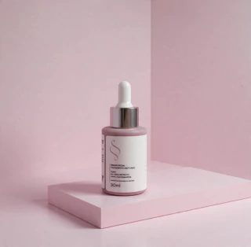
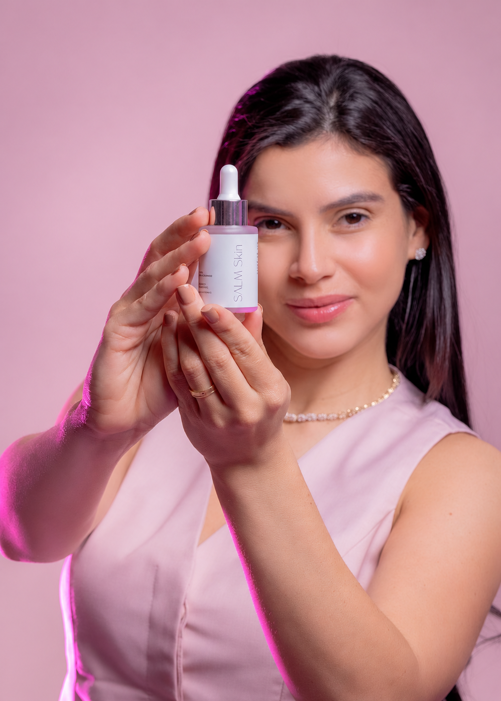
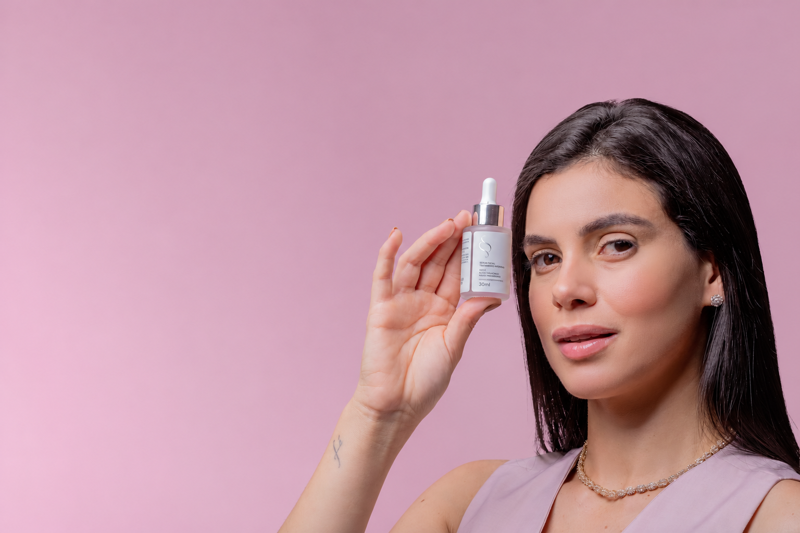
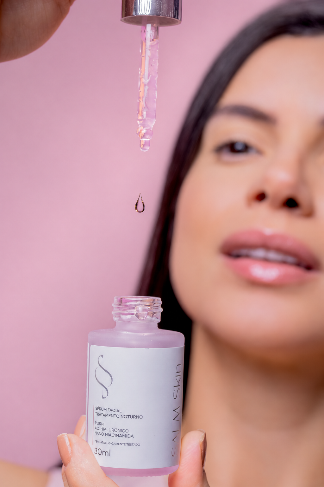
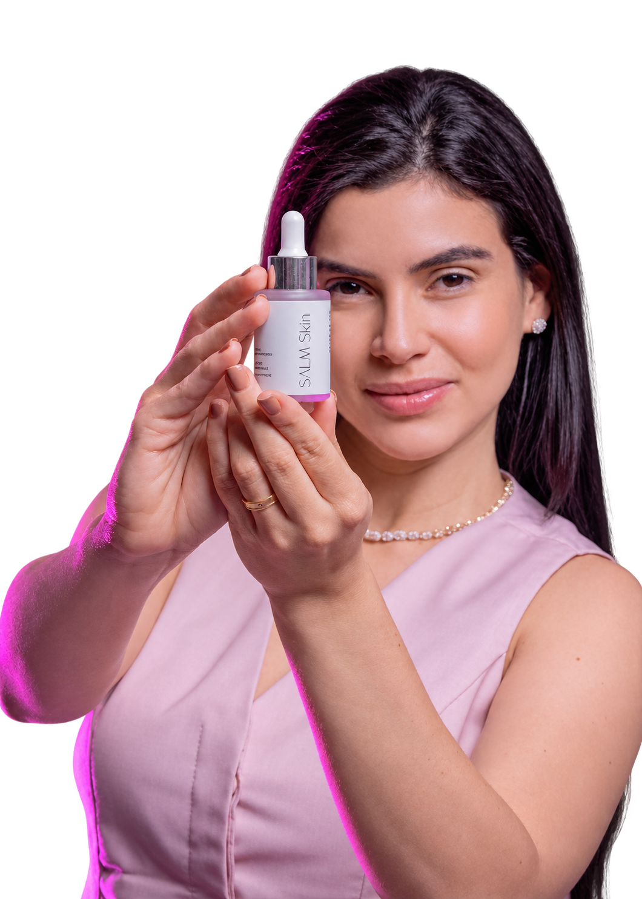

Sérum Facial
PDRN
O  Sérum Facial Noturno foi desenvolvido com tecnologia avançada para promover uma renovação intensa da pele durante o período de descanso. Sua fórmula inteligente combina ativos nanoencapsulados de alta performance, que garantem maior absorção, eficácia e resultados visíveis em curto prazo.
Sérum Facial Noturno foi desenvolvido com tecnologia avançada para promover uma renovação intensa da pele durante o período de descanso. Sua fórmula inteligente combina ativos nanoencapsulados de alta performance, que garantem maior absorção, eficácia e resultados visíveis em curto prazo.

Benefícios principais


O SÉRUM

Starter Glow
Sérum Facial SALM Skin PDRN
1 mês · 30 dias de tratamento
R$259,00 R$189,00 27% OFF
Saiba mais
Ideal para quem deseja iniciar sua jornada de cuidados com a SALM Skin. Este frasco é o ponto de partida para adaptar sua pele à tecnologia nanoencapsulada e sentir os primeiros sinais de renovação e viço.

Advanced Care
Sérum Facial SALM Skin PDRN
2 meses · Economia de R$ 60,00
R$529,00 R$359,00 32% OFF
Saiba mais
Quando o cuidado vira rotina. Este kit com 2 séruns é focado em quem já busca resultados mais consistentes na uniformização do tom e na firmeza da pele. A constância potencializa a ação regeneradora do Nano PDRN.

Pro Skin Treatment
Sérum Facial SALM Skin PDRN
3 meses · O melhor custo-benefício
R$779,00 R$509,00 35% OFF
Saiba mais
BÔNUS EXCLUSIVO: Frete Grátis + Mini Guia Digital "Rotina de Pele SALM Skin".
O protocolo recomendado para a transformação real da sua pele. Três meses é o ciclo ideal para que os ativos nanoencapsulados atuem profundamente em todas as camadas, entregando o máximo de regeneração, clareamento e rejuvenescimento.

Sérum Facial
PDRN
Regeneração Profunda Enquanto Você Dorme
Descubra o poder da renovação intensa com o Sérum Facial PDRN, desenvolvido com tecnologia de ponta para transformar sua pele durante o descanso. Sua fórmula avançada conta com ativos nanoencapsulados que garantem absorção máxima e resultados visíveis em pouco tempo.
Ativos Principais
Nano PDRN
Estimula a renovação celular e a produção de colágeno, promovendo a reparação dos tecidos. Reduz linhas finas e melhora a firmeza da pele.
Ácido Hialurônico
Proporciona hidratação profunda e prolongada, retendo a umidade natural da pele.
Nano Niacinamida (Vitamina B3)
Uniformiza o tom da pele, reduz manchas e controla a oleosidade.
Modo de Uso
Com as mãos limpas, aplique de 3 a 4 gotas no rosto.
Espalhe com movimentos circulares até completa absorção.
Sobre o sérum
O Sérum Facial SALM Skin é um potente hidratante enriquecido com ativos que proporcionam uma hidratação profunda, deixando uma sensação de suavidade irresistível.
Tratamento noturno · 30 ml · Dermatologicamente testado
Composição
Aqua, Xanthan Gum, Panthenol, Niacinamide, Propylene Glycol, Diazolidinyl Urea, Parfum, Lecithin, Sodium Hyaluronate, Sodium DNA, Caprylic/Capric Triglyceride, Phenoxyethanol, Polysorbate 80, Sorbitan Stearate, Caprylyl Glycol, PCA Ethyl Cocoyl Arginate, Benzyl Salicylate, Limonene, Iodopropynyl Butylcarbamate, Cyanocobalamin, Lactic Acid.
Precauções
Mantenha fora do alcance das crianças, em local fresco e protegido dos raios solares. Caso o produto entre em contato com os olhos, lave imediatamente com água em abundância. No caso de irritação, suspenda o uso e, se necessário, procure orientação médica. Uso externo.